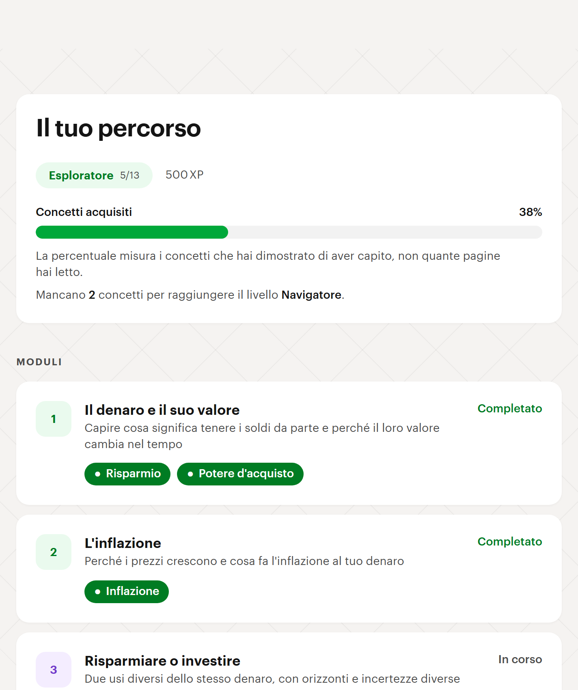
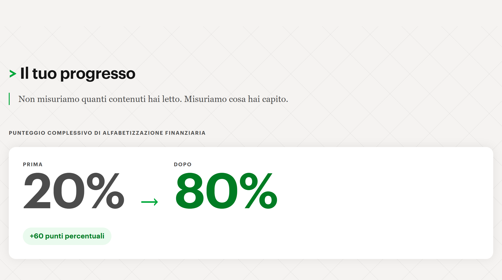

Un percorso guidato che insegna i concetti di base della finanza
personale, e misura quanto l'utente ha capito prima e dopo averlo fatto.
Mattia · Stefano
Chi usa Capitolo Zero
13
I concetti coperti, dal risparmio all'ETF. Ognuno collegato ai suoi prerequisiti.
Chi ha già sentito le parole — inflazione, azione, obbligazione, ETF — ma
non sa cosa significano. Un glossario non basta: per cercare una voce
devi già sapere che ti manca.
Come funziona
Prima — 5 domande. Restituiscono quali concetti mancano, area per area
Impara — 6 moduli, 12 lezioni, simulatori interattivi. I moduli si sbloccano in ordine
Dopo — le stesse 5 aree rimisurate, affiancate al punteggio iniziale

Cosa succede quando l'utente sbaglia
Ogni risposta sbagliata è collegata nel dato a un concetto preciso.
L'app non ripete la stessa domanda: risale i prerequisiti e riapre la
lezione del primo concetto che l'utente non ha ancora acquisito.
Esempio
Sbagli una domanda sulle azioni. L'app riapre «Proprietario o creditore?»,
non la lezione sulle azioni.
13 concetti collegati da prerequisiti, più una funzione pura. 51 test.
Nessun modello interrogato mentre l'utente studia.
Moduli e lezioni sono dati, non testo dentro le schermate: stanno in un
punto solo e oggi vivono in locale. Portarli su database non tocca né il
motore né l'interfaccia — il client è già cablato, e l'app gira comunque
se il database non c'è.
Prima e dopo

Schermata dell'app. Sotto il punteggio, il confronto area per area —
comprese quelle rimaste invariate. Le domande finali sono gemelle delle
iniziali: stesso concetto, formulazione diversa.
Cosa fa e cosa non fa
Fa
Spiega i concetti. Calcola esempi numerici. Verifica la comprensione
con domande e la rimisura alla fine.
Non fa
Non consiglia strumenti. Non confronta prodotti. Non dice cosa comprare
o vendere. Non profila l'utente.
L'app dichiara questi limiti all'utente in una pagina dedicata, insieme
a cosa è stato semplificato e cosa non è stato alterato.
Il lavoro è diviso fra agenti specializzati. Apri una voce per l'elenco.
4 hook — controlli automatici, a ogni modifica
verifica-accessibilita
Dopo ogni modifica a un componente: blocca 5 violazioni certe.
rileva-design
61 regole contro gli anti-pattern del frontend generato da AI.
blocca-segreti
Prima di ogni commit: blocca se in stage c'è una credenziale.
verifica-tipi
A fine turno: se il typecheck fallisce, il turno non si chiude.
11 agenti — un mestiere ciascuno, contesto separato
ui-builder · edu-content
Componenti accessibili; testi in linguaggio semplice.
revisore-accessibilita
Audit WCAG 2.2 AA. Ha promosso questo deck con zero bloccanti.
matt-implementer · matt-reviewer
Uno esegue un ticket partendo da zero, l'altro lo rivede.
deck-builder · supabase-dev · 4 ausiliari di design
Slide, schema dati, produzione degli asset.
24 skill — conoscenza richiamabile a comando
accenture-brand · brilliant-style
Due design system misurati dai siti reali: il primo per queste slide, il secondo per l'app.
accessibilita · impeccable
Contrasti calcolati da script; 23 comandi di design e 61 regole.
tdd · code-review · to-tickets · domain-modeling
Il metodo di lavoro: dalla specifica ai ticket, fino alla revisione.
5 comandi — il flusso di lavoro, che invochiamo noi
/buildmatt
L'orchestratore: dall'idea alla consegna. È la slide dopo.
/kickoff
Inquadra il lavoro, prende la decisione architetturale, apre il branch.
/audit · /ship
Audit di accessibilità; poi check, controllo segreti, commit, push.
/demo
La checklist dell'ultima ora. Si esegue una volta sola, non a ogni feature.
/buildmatt — dall'idea alla consegna
Il ciclo, in un comando
0 · avvio — branch, brief, decisione
1 · grilling — ci intervista per affilare l'idea
2 · bivio — sta in una sessione, o va spezzato
3 · piano — specifica, poi ticket con le dipendenze
4 · build — un subagent per ticket
5 · verifica — revisione e audit, in parallelo
6 · consegna — check, segreti, commit, push
Serve a proteggere una cosa sola: la qualità del ragionamento
dentro una finestra di contesto. Oltre un certo volume il
modello resta fluente ma smette di ragionare bene, e non lo dichiara.
Da lì le due regole: la pianificazione sta tutta in una finestra, e
ogni ticket riparte da zero.
npm run frontiera calcola quali ticket possono partire
subito, uno per subagent. In parallelo solo su file disgiunti.
Le due regole che abbiamo seguito
I controlli girano a ogni modifica, non alla fine
Accessibilità e tipi sono verificati mentre si scrive. Non c'è una fase
di correzione finale, perché in 5 ore non ci sarebbe stata.
Chi scrive non revisiona
Ogni ticket parte da un contesto vuoto e la revisione gira su un agente
separato: chi ha appena scritto del codice tende ad approvarlo.
52 commit · 7.616 righe · 51 test ·
ogni decisione scritta con l'alternativa scartata